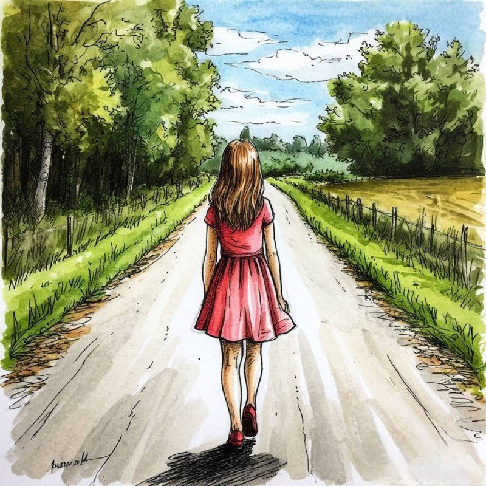

Вы когда-нибудь ловили себя на этом странном чувстве вечером? Вроде бы всё сделано. Рабочие задачи закрыты, домашние дела переделаны, даже на звонок маме время нашлось. Список можно вычеркивать с чувством выполненного долга. Но внутри не удовлетворение, не усталость даже, а какая-то звенящая пустота. Будто день прожит, а тебя в нём не было.
Это чувство знакомо многим. Усталость, которая не проходит после выходных. Достижения, которые не греют душу, как будто чужие. Ощущение, что бежишь по хорошо знакомой дороге, но вдруг останавливаешься и понимаешь: «А куда, собственно, я бегу? И зачем?».
Мы привыкли списывать это на лень, на недостаток мотивации, на «надо просто взять себя в руки». Но что, если эта пустота - не враг, не провал, а указатель? Что, если это голос вашего истинного «я», который слишком долго заглушали чужие голоса? Голоса, которые шептали или требовали: «надо», «должна», «так принято», «все так живут», «а что люди скажут».
Чей сценарий вы играете?
Давайте проведём маленький эксперимент. Вспомните какую-нибудь крупную цель, которую вы недавно перед собой ставили. Ну, или хотя бы формулировали как важную. Сменить работу. Начать бегать по утрам. Запустить проект. Похудеть к лету. Привести жизнь в порядок.
А теперь честно, не торопясь, спросите себя:
- Кто настоящий автор этой цели? Чья она? Ваша? Или это голос родителей, который когда-то сказал, что «хорошая девочка должна быть успешной»? Или ожидания партнёра, которому хочется соответствовать? Или картинка из соцсетей, где у всех «идеальная жизнь», и вам захотелось так же?
- Что вы чувствовали, двигаясь к ней? Помните то состояние, когда вы думали об этой цели или делали первые шаги? Это был азарт, интерес, предвкушение? Или тяжесть, скука, чувство, что опять приходится себя заставлять?
- Где в этом списке ваших «надо» живут ваши настоящие желания? Они вообще есть? Или вся территория занята чужими флагами?
Если эти вопросы отозвались где-то глубоко внутри, если вы почувствовали укол или смутное беспокойство - это хороший знак. Это значит, что контакт с собой не потерян окончательно. Просто сигнал очень слабый, заглушённый годами привычки жить по сценариям. Мы часто, сами того не замечая, играем роли, которые нам когда-то раздали. Роль «идеальной сотрудницы», которая никогда не ошибается. Роль «заботливой дочери», которая обязана оправдывать ожидания. Роль «успешной женщины», у которой всё схвачено. И однажды, в какой-нибудь вечер четверга, просыпаемся с чувством: «А это вообще моя жизнь?».
Хорошая новость в том, что любой сценарий можно переписать. Но сначала нужно понять, что вы «в театре», а не дома.
Как услышать себя в этом шуме?
«Чего я хочу?» - возможно, это самый пугающий и одновременно самый важный вопрос для женщины, привыкшей быть удобной и правильной. Пугающий, потому что, когда задаёшь его себе, внутри часто не находится ответа. Там либо пустота, либо белый шум из обрывков «нельзя», «стыдно», «рано», «подумают что».
Но этот вопрос важен именно потому, что только собственный, выстраданный и найденный ответ способен вернуть нас к жизни. К настоящей, а не той, что «как у всех». Как это сделать? Как услышать этот тихий голос, если вы годами тренировались слушать всех, кроме себя?
Это не происходит по щелчку. Это не медитация на тему «просто расслабься и пойми». Это - системная работа, похожая на расхламление комнаты, в которой годами складировали чужие вещи. Сначала нужно разобрать завалы: найти и признать старые установки, которые вам больше не подходят («не высовывайся», «будь удобной», «любовь надо заслужить»). Затем обнаружить среди этого хлама свои истинные ценности, те самые, которые отзываются теплом в груди. И только потом, на расчищенном месте, можно начинать строить цели, которые будут питать вас энергией, а не высасывать её.
Такую работу сложно делать в одиночку. Слишком велик риск снова забрести в ту же колею, слишком громки внутренние голоса критиков. Именно поэтому так важно пространство, где безопасно задавать себе эти вопросы. Где есть тот, кто подсветит фонариком в тёмных углах, и те, кто идёт тем же путём и понимает ваши сомнения без лишних слов.
Потому что в конце этого пути - не просто «достижение целей». В конце - вы. Настоящая, со своими желаниями, со своим ритмом, со своим, только вашим ощущением, что этот день прожит не зря, потому что в нём были вы.
Статья подготовлена на основе материалов психологической практики. Если тема откликнулась, вы можете связаться со мной для обсуждения возможности индивидуальной работы.
Статья опубликована на b17.ru.